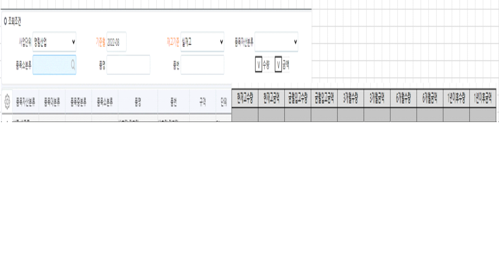

1개월수량 3개월수량 6개월수량 1년이후수량

1. 재고Aging 조회 화면 수정개발
2. 조회조건 추가
- 수량, 금액: 체크박스(Default: 체크)
3. 시트 컬럼 수정
1) 1개월수량~3년이후 수량을 3개월수량, 6개월수량, 1년이후수량으로 변경
- 3개월수량: 기존 컬럼기준 1개월수량~3개월수량
- 6개월수량: 기존 컬럼기준 6개월수량~9개월수량
- 1년이후수량: 기존 컬럼 기준 1년수량~3년이후수량
2) 현재고금액, 금월입고금액, 3개월수량금액, 6개월수량금액, 1년이후수량금액 추가
- 각각 수량컬럼 뒤에 추가
ex) 현재고수량/현재고금액/금월입고수량/금월입고금액 …....
- 금액: 수량*표준재고단가
-> 표준재고단가등록(통합)에 입력된 표준재고단가
4. 조회
1) 수량, 금액 체크 여부에 따라 수량컬럼, 금액컬럼 조회. 언체크시 숨김처리(월품목구매현황 화면 참고)
- 수량컬럼: 현재고수량, 금월입고수량, 3개월수량, 6개월수량, 1년이후수량
- 금액컬럼: 현재고금액, 금월입고금액, 3개월금액, 6개월금액, 1년이후금액
출처: \<http://61.250.183.6:8100/Page/Open/24519/100101/0/18820244>